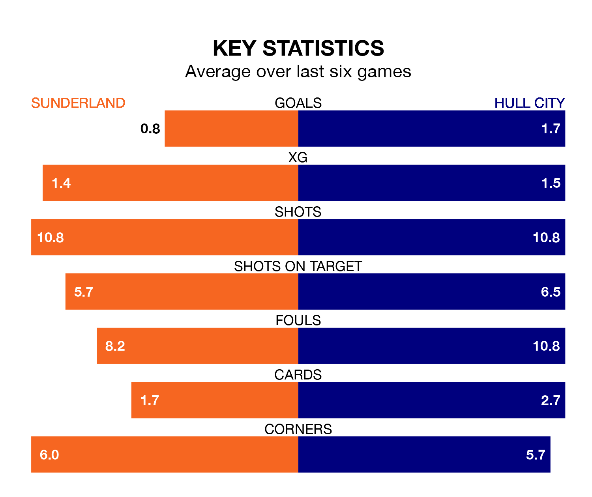

Hull City travel to Sunderland on late Friday in EFL Championship.
The visitors come into the game on the back of a defeat in their last match, having lost to Norwich City 2-1 at home, with a goal from Tyler Morton.
The Black Cats also lost their last match, 2-1 against Ipswich Town, with their goal scored by Jack Clarke.
In the last 10 years, Sunderland and Hull have played each other on 14 occasions. Sunderland won four of them, Hull three, and they drew seven times.
On average, the Black Cats scored 1.3 goals and the Tigers 1.3 in those matches.
Their last meeting was on December 26, when Sunderland won 1-0 away.
With 41 goals in 27 games so far this season, Hull are scoring more than average in the league with 1.5 goals per game. And they are conceding at an average rate, letting in 38 goals at a rate of 1.4 per game.
Sunderland, meanwhile, are average scorers, with 1.4 goals per game. They have conceded 1.1 goals per game.
In Jack Clarke, the Black Cats have one of the league's most on-form strikers so far this season. He has notched 13 goals in 27 appearances, to sit fourth in the scoring charts.
His goal rate of one every 184 minutes is slightly quicker than that of Aaron Anthony Connolly, City's top scorer with a goal every 143 minutes, and a total of eight goals in 24 games.
The hosts are seventh in the table after 27 games, of which they have won 12 and drawn four, earning 40 points.
The Tigers are two places behind Sunderland in ninth, with 11 wins and six draws putting them on 39 points.
Sunderland are in mixed form in EFL Championship, with two wins and a draw from their last six games.
With two wins and four losses over that period, the away side's form is slightly worse – they have taken six points from 18, compared to the Black Cats's seven.
Friday's match will be refereed by Robert Jones, who is taking charge of his first EFL Championship game this season.
He is yet to oversee a match featuring either Sunderland or Hull this season.
Updated: 13:09 (UTC), 17/01/24